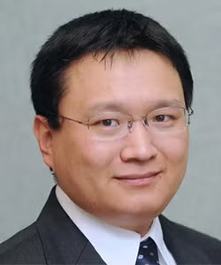

Developing new ways to see, measure, and understand matter.

From nanoscale light–matter interactions to quantum sensing and electrochemical dynamics, my research develops physical measurement techniques that reveal otherwise inaccessible processes. We combine nanoscale optics, electrical spectroscopy, and physics-guided computation to study materials, devices, and interfaces.
Research
My work builds measurement tools around the scientific question: what physical processes can we resolve when light, electrical signals, and local probes meet at the nanoscale?
How can light be delivered efficiently to nanometer-scale volumes?
We develop fiber-coupled plasmonic nanofocusing probes and near-field techniques to investigate light–matter interactions with nanoscale spatial resolution. Our high-external-efficiency platform concentrates more than 50% of the light delivered through an optical fiber into an optical hotspot approximately 5 nm in size. These techniques support lens-free optical nanoscopy, tip-enhanced Raman spectroscopy, and localized optical spectroscopy.
Can nanofocusing help position and optically read out quantum sensors?
We investigate plasmonic trapping and fluorescence of diamond nitrogen-vacancy (NV) nanodiamonds at a nanofocusing tip. We are developing optical excitation and optically detected magnetic resonance (ODMR) readout toward a new quantum imaging tool. Nanoscale magnetic imaging remains a research goal.
Where and how does light become electrical current?
We develop spatially resolved techniques to separate optical, electrical, and thermal processes in nanoscale materials and devices. Our three-dimensional near-field photocurrent microscopy maps photovoltaic and photothermoelectric responses in van der Waals interfaces.
Alongside established research, we explore new measurement concepts through hands-on experimentation, instrument development, and physics-guided modeling.
Nonlinear Electrochemical Spectroscopy
I am exploring how nonlinear electrical spectroscopy and time-resolved measurements can reveal dynamic processes at electrochemical interfaces. Conventional impedance spectroscopy primarily probes the linear response near a given operating state; nonlinear responses may provide complementary information about interfacial kinetics and how they evolve under electrical perturbations. This exploratory project is motivated by the possibility of developing more informative diagnostic methods for electrochemical systems and batteries.
Ongoing exploratory research
Selected Publications
Selected papers connect current research directions to the experimental methods behind them. The complete list remains available separately.
I am a Professor of Electrical and Computer Engineering at the University of California, Riverside. I received my Ph.D. in Applied Physics from UC Berkeley in 2010 and was a postdoctoral researcher there before joining UCR. My earlier work includes graphene optical modulators and light-driven plasmonic motors.
My teaching spans circuit analysis, electronic design, electromagnetics, and graduate-level quantum mechanics, connecting practical engineering methods with the physics of modern devices.
Courses I have taught at UC Riverside include:
Undergraduate
EE 030B
Fundamentals of Electric Circuits II
EE 100A
Electronic Circuits I
EE 100B
Electronic Circuits II
EE 117
Electromagnetics II
Graduate
EE 201 / MSE 207
Applied Quantum Mechanics
EE 204
Advanced Electromagnetics
Graduate Advising
I also serve as Graduate Advisor for Enrolled Students in the Department of Electrical and Computer Engineering. Current graduate students are welcome to contact me regarding academic progress, degree requirements, research arrangements, CPT/OPT-related academic matters, and other academic advising needs. Questions regarding TA applications and assignments should be directed to the ECE Graduate Student Affairs Office.